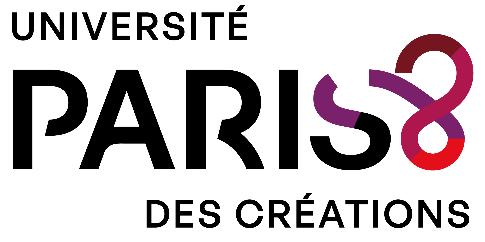
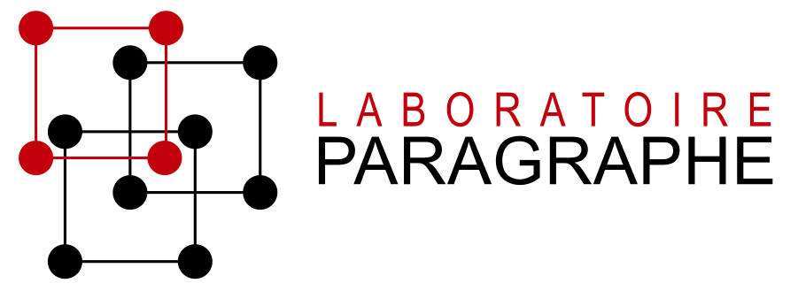
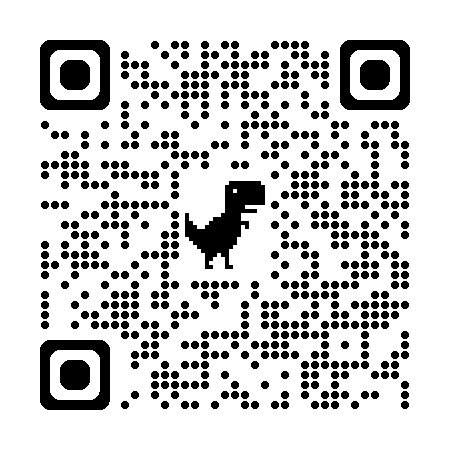

DTDM Athenes 2026
Sustainable Digital Design & Ethical Technology
Samuel Szoniecky ![]()
 |
 |
 |
|---|
DTDM Athenes 2026
Digital Transformation Design & Management : Launch of the international Mester’s Programme
Sustainable Digital Design & Ethical Technology
What is Sustainable Digital Design ?
Guattari’s Ecosophy: The Three Ecologies and Epistemic Transversality

The symbiosis between humans, AI agents and Gaïa
The critical challenge of the symbiosis between humans, AI agents, and the environment lies in designing technological ecosystems that augment human capabilities and promote ecological regeneration, ensuring that artificial intelligence serves as a catalyst for sustainable coexistence rather than a driver of exploitation.

Modeling informational existences
{kind=link}

What is Ethics ?

The point of view of ethics is: what are you capable of, what can you do ?Why Ethical Technology is an ethical issue ?

Examples of what can be done ?
Some examples of AI use in academic work.
Generate proposals for interventions in a conference
The Gemini AI calculates the relationship between the conference profile and a researcher’s profile; an algorithm calculates the Markdown pages and generates a website.
Calculate the convergence between university research schools and laboratory axes
Validate the convergence between university research schools and laboratory priorities
{kind=link}
Create creative applications without needing extensive computer programming knowledge.
{kind=link}
How to model the increase and decrease of power for a specific mode of existence ?
Web applications to assess the evolution of power for an existence
To be continued.
There is much work to be done to enable everyone to assess the increase or decrease in their own fundamental capacities :
discernment,
reasoning,
resonance,
action.
It is possible to gather all this personal information, but should we ?
How ?
The DTDM Master’s program is the space where these questions can be addressed and future citizens can answer them…
I hope…